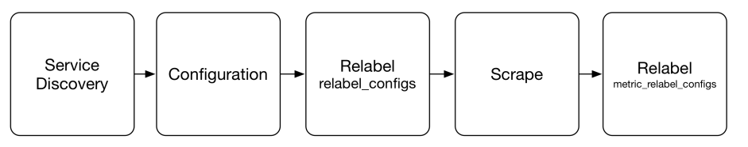
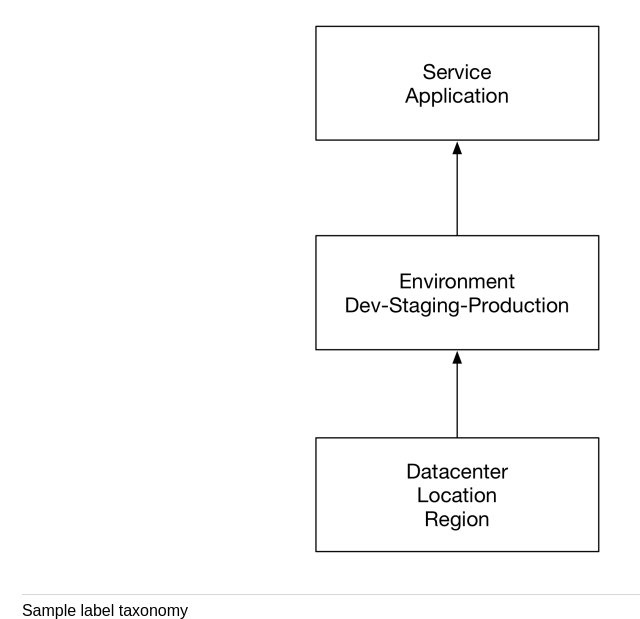

1 Monitoring Nodes and Containers
We will monitor various host resources:
- CPU
- Memory
- Disk
- Availability
2 Monitoring nodes
- Prometheus uses tools called exporters to expose metrics on host and applications.
- The Node Exporter is written in Go and a library of collectors for various host metrics including CPU, memory and disk.
- Node exporter also has a textfile collector that allows you to export static metrics which is useful for sending information about the node.
2.1 Insalling the Node Exporter
- Github link
$ node_exporter --version node_exporter, version 1.0.1 (branch: HEAD, revision: 3715be6ae899f2a9b9dbfd9c39f3e09a7bd4559f) build user: root@1f76dbbcfa55 build date: 20200616-12:44:12 go version: go1.14.4
- The nodeexporter exporter runs, by default on 9100 and exposes metrics on the /metrics path.
2.2 Configuring the TextFile collector
- The textfile collector is very useful because it allows us to expose custom metrics.
- The collector works by scanning files in a specified directory,
extracting any string that are formatted as Prometheus metrics and
exposing them to be scraped.
$ mkdir textfile_collector $ # emacs and add metric file $ bat textfile_collector/metadata.prom ───────┬─────────────────────────────────────────────────── │ File: textfile_collector/metadata.prom ───────┼─────────────────────────────────────────────────── 1 │ metadata{role="docker_server",datacenter="NJ"} 1Metric name: metadata
$ node_exporter --collector.textfile.directory ./textfile_collector --collector.systemd --collector.systemd.unit-whitelist="(docker|ssh|rsyslog).service"
You can see the raw metrics at http://localhost:9100/metrics
Now can you edit the prometheus.yml configuration file to scrape the above metrics:
scrape_configs: - job_name: 'prometheus' static_configs: -targets: ['localhost:9090'] - job_name: 'node' static_configs: -targets: ['localhost:9100']
2.3 Filtering collectors on the server
Edit the prometheus.yml configuration file:
- job_name: 'node'
static_configs:
-targets: ['localhost:9100']
params:
collect[]:
-cpu
-meminfo
2.4 Scrape Lifecycle

2.5 Labels
- Changing a label or adding a new label creates a new time series. So, labels should be used judiciously and remain as constant as possible.
2.6 Label taxonomies
We already get two topological labels for free with every metric: job and instance.

2.7 Relabelling
2.7.1 Dropping metric
- job_name: 'node'
static_configs:
-targets: ['localhost:9100']
metric_relabel_configs:
-source_labels: [__name]
regex: '(container_tasks_state|container_mem_failure_total)'
action: drop
2.7.2 Replacing label values
metric_relabel_configs: -source_labels: [id] regex: '/docker/([a-z0-9]+);' replacement: '$1' target_label: container_id
Puts a new label: 'containerid'
2.7.3 Dropping labels
metric_relabel_configs: -regex: 'kernelVersion' action: labeldrop
2.8 Vector matches
Vector matches attempt to find a matching element in the right hand side vector for each entry on the left hand side.
Types:
- One to one matches: Finds a unique pair of entries from each side of the operation.
- Many to one matches: are where each vector element on the "one" side can match with multiple elements on the "many" side.
3 Query permancene
3.1 Recording rules
Recording rules are a way to compute new time series, particularly aggregated time series, from incoming time series. Use case:
- Produce aggregates across multiple time series.
- Precompute expensive queries.
- Produce a time series that we could use to generate an alert.
3.2 Configuring recording rules
$ mkdir -p rules $ cd rules $ touch node_rules.yml
Edit prometheus.yml:
rule_files: - "rules/node_rules.yml"
$ cat rules/node_rules.yml
groups:
- name: node_rules
rules:
- record: instance:node_cpu:avg_rate5m
expr: 100 -avg (irate(node_cpu_seconds_total{job="node",mode="idle"}[5m])) by (instance) * 100
4 Visualization
- Grafana supports variety of formats including Graphite, Elasticsearch and Prometheus.
- Prometheus isn't generally used for long term data retention-the default is 15 days worth of time series. This means that Prometheus is focused on immediate monitoring concerns than perhaps other systems where visualization and dashboards are more important.
Some nice dashboards:
5 Installing Grafana
- Instructions
$ ./grafana-server --v Version 7.1.5 (commit: 9893b8c53d, branch: HEAD)
5.1 Starting and configuring Grafana
$ ./grafana-server
- Visit http://localhost:3000/login
- Default Credentials: admin for both username and passwords.
- Add Prometheus data source.
- You can import dashboards from the data source page of prometheus.
- You can view those dashboards by going to the dashboards page!